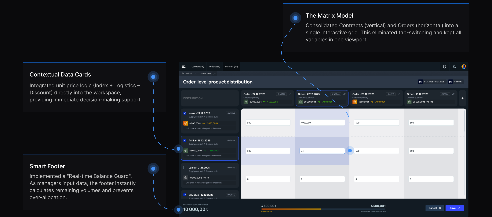
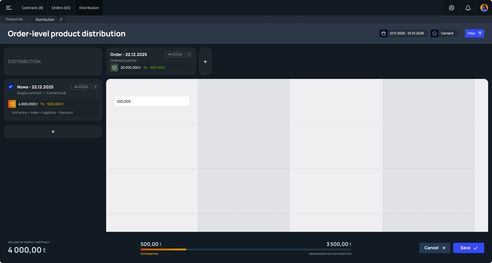
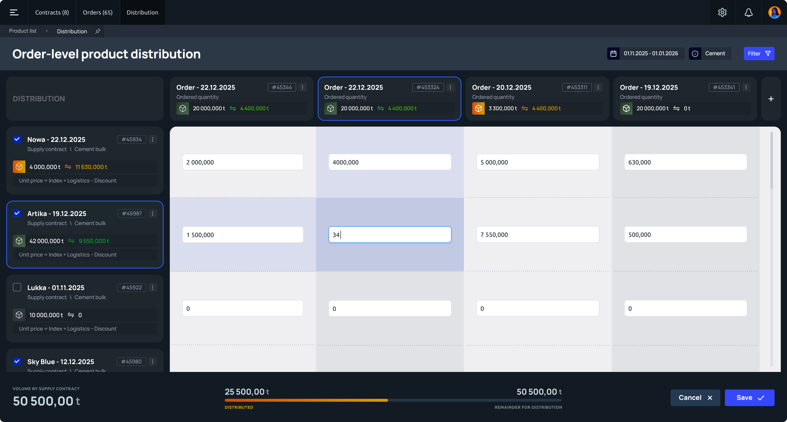
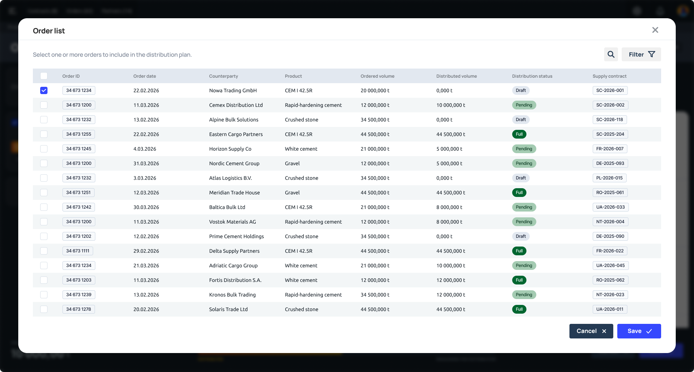
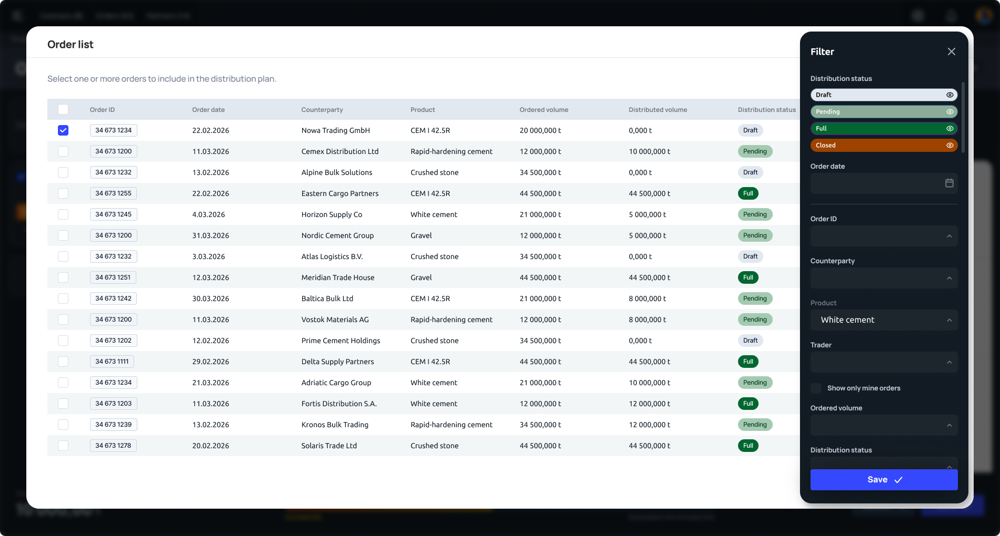

Discovery & Strategy
Optimizing ERP core.
From fragmented
workflows
to a unified matrix
The main pain point
“We were forced to keep the real data in Excel and paper notes because the system wouldn’t let us see the full picture on one screen.”Alexa Syanova — Senior Logistics Manager
The main problem
75% of product distribution errors traced back to one place: data entry and reconciliation. The system meant to prevent mistakes was quietly creating them.
The goal
Give distribution managers full control over data — so errors get caught before they become financial losses, not after.
UX Strategy
Shadowed distribution managers during live shifts to see where the workflow actually broke down, not where we assumed it did.
Sat down with distribution managers directly to unpack their day-to-day workflow and where the system fought against it.
Tested the existing interface first to confirm where it broke, then tested early matrix prototypes against the same tasks.
Key Insight
The system forced a linear workflow for a process that required parallel data comparison. Managers were “calculating in their heads” due to a fragmented UI.
The Solution & Business Impact
Intelligent Matrix Distribution Interface

The Solution & Business Impact
Examples of developed screens


Key Design Decision
Before — Linear
One record visible at a time. Comparing orders meant switching screens, scrolling back, and holding numbers in your head — exactly where the 75% error rate came from.
After — Matrix
Orders, volumes and counterparties laid out side by side in one grid. Managers compare and reconcile data in place, instead of reconstructing the picture from memory.

Filters & Table Settings
Data Grid Customization


Success Metrics
Quantifiable improvements in workflow efficiency and data accuracy.
Allocation errors reduced through system-level validation
Time-on-task cut from 20 min to 3–5 min per cycle
Logistics department throughput, no additional hiring